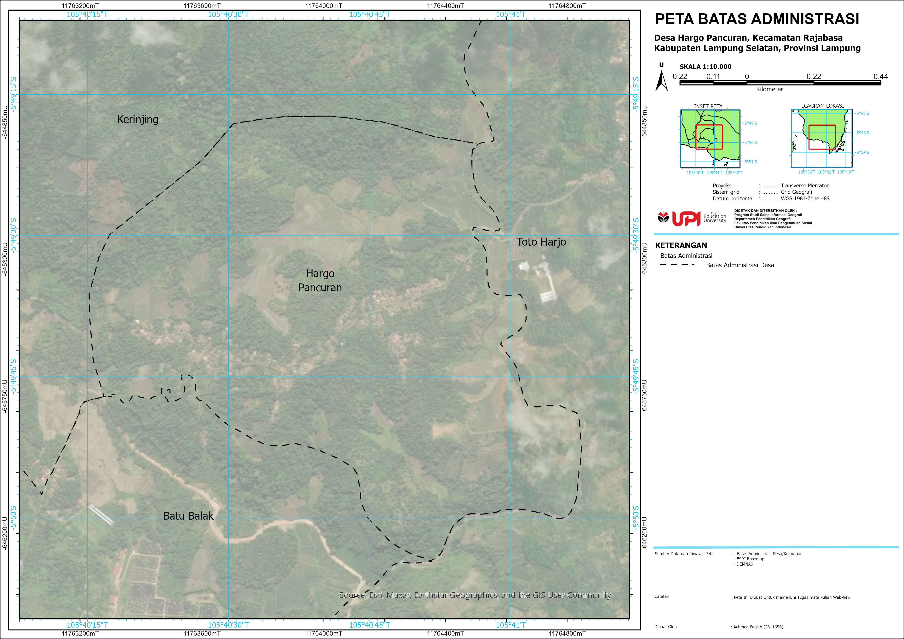

Profil Desa Hargo Pancuran
Desa Hargo Pancuran adalah Desa yang terletak dalam wilayah dengan kontur ketinggian yang bervariasi, dari sekitar 18 meter hingga lebih dari 200 meter di atas permukaan laut. Kondisi ini menunjukkan bahwa wilayah desa memiliki bentang alam yang beragam, mulai dari dataran rendah hingga perbukitan. Penggunaan lahan di Hargo Pancuran didominasi oleh area sawah, ladang, dan kebun, mencerminkan dominasi sektor pertanian dalam kehidupan masyarakatnya. Terdapat juga kawasan permukiman yang tersebar, fasilitas pendidikan, masjid, kantor desa, dan Pos PGA, yang menunjukkan adanya pusat pelayanan dan aktivitas sosial masyarakat. Keberadaan jaringan jalan dan sungai juga memperlihatkan aksesibilitas yang cukup baik dan potensi sumber daya air di wilayah ini. Secara keseluruhan, Desa Hargo Pancuran memiliki karakteristik geografis dan penggunaan lahan yang mendukung kehidupan agraris sekaligus memiliki potensi pengembangan berkelanjutan berbasis sumber daya lokal.
Batas Administrasi Desa
Peta batas administrasi Desa Hargo Pancuran menggambarkan secara jelas batas wilayah desa yang ditandai dengan garis putus-putus berwarna hitam. Batas ini menjadi penentu legalitas wilayah desa yang dibedakan dari desa-desa sekitarnya, seperti Kerinjing di sebelah utara, Toto Harjo di timur, dan Batu Balak di bagian selatan. Penentuan batas ini sangat penting dalam pengelolaan pemerintahan desa, distribusi sumber daya, dan pelayanan publik.

Secara spasial, batas administrasi terlihat mengikuti fitur-fitur alami dan buatan seperti jalur sungai kecil, jalan desa, hingga batas hutan atau bukit. Penarikan batas seperti ini umum dilakukan untuk mempermudah identifikasi di lapangan. Meskipun terlihat tidak sepenuhnya simetris atau geometris, batas-batas ini mencerminkan hasil kesepakatan historis maupun administratif.
Di bagian barat dan selatan, batas desa tampak mengikuti kontur alam yang membatasi pemukiman dengan wilayah hutan atau lahan tidak produktif. Ini menunjukkan bahwa batas desa tidak hanya mempertimbangkan aspek legal, tetapi juga kondisi geografis yang ada. Keberadaan batas ini membantu menghindari konflik antarwilayah, terutama dalam hal penggunaan lahan dan penguasaan sumber daya.
Batas administrasi juga penting dalam penyusunan kebijakan pembangunan, seperti pembangunan infrastruktur jalan, fasilitas umum, serta alokasi dana desa yang harus tepat sasaran sesuai wilayah kewenangan. Selain itu, dalam kegiatan sensus dan pemetaan data kependudukan, batas desa menjadi acuan utama dalam pengumpulan data berbasis wilayah.
Data Tersedia

Peta Citra
Peta citra satelit menampilkan tampilan visual faktual wilayah Desa Hargo Pancuran dari hasil penginderaan jauh, memberikan gambaran nyata tentang kondisi lahan dan tutupan vegetasi. Permukiman tampak jelas sebagai area yang padat dan berpola linier, menyesuaikan dengan jalur jalan yang juga terlihat jelas. Lahan pertanian, baik berupa sawah maupun kebun, ditunjukkan oleh lahan terbuka dengan warna lebih terang, tersebar di sekeliling area permukiman. Vegetasi lebat tampak menutupi sebagian besar wilayah utara dan selatan desa, menunjukkan keberadaan hutan sekunder atau kebun dengan penutupan pohon yang tinggi. Citra ini sangat berguna dalam memverifikasi data pada peta tematik lainnya seperti penggunaan lahan dan topografi. Selain itu, citra ini juga bermanfaat dalam perencanaan spasial, pemetaan bencana, dan pengawasan perubahan penggunaan lahan dari waktu ke waktu.

Peta Penggunaan Lahan
Peta penggunaan lahan Desa Hargo Pancuran menggambarkan pemanfaatan ruang desa secara terstruktur berdasarkan jenis aktivitas dan fungsi lahan. Permukiman warga terkonsentrasi di sepanjang jalur jalan utama yang membentang dari barat ke timur, menandakan pentingnya aksesibilitas dalam pembentukan pola pemukiman. Selain permukiman, terlihat pula adanya ladang, sawah, kebun, serta lahan kosong yang tersebar di berbagai bagian desa. Lahan pertanian, baik berupa ladang (kuning) maupun sawah (hijau dengan arsiran biru), mendominasi wilayah utara dan timur yang kemungkinan memiliki karakteristik tanah dan topografi yang sesuai untuk budidaya. Kebun (hijau terang) tersebar di daerah yang lebih luas dan kemungkinan ditanami komoditas seperti kopi, coklat, atau buah-buahan tropis. Fasilitas umum seperti masjid, kantor desa, pos PGA, dan bangunan pendidikan juga teridentifikasi dengan simbol yang jelas, menunjukkan peran vitalnya dalam pelayanan masyarakat desa.

Peta Topografi
Peta topografi menunjukkan kondisi elevasi wilayah Desa Hargo Pancuran dengan gradasi warna dari hijau (elevasi rendah) hingga merah (elevasi tinggi), serta garis kontur mayor dan minor. Elevasi tertinggi tercatat lebih dari 200 mdpl dan terletak di bagian barat laut desa, yang tampak berwarna cokelat tua dan memiliki kontur yang rapat. Sebaliknya, wilayah selatan dan timur desa memiliki elevasi terendah, sekitar 18 mdpl, dengan gradasi warna hijau terang dan kontur yang lebih renggang. Topografi ini menunjukkan bahwa wilayah desa memiliki bentuk yang bervariasi dan berbukit, yang memengaruhi pola aliran air dan penggunaan lahan. Wilayah dengan kontur rapat berpotensi rawan longsor atau sulit untuk pembangunan infrastruktur. Sebaliknya, area datar di bagian selatan dan timur cocok untuk pertanian intensif dan pengembangan permukiman baru.